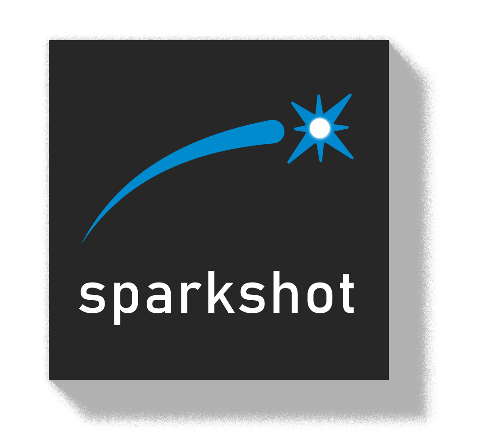
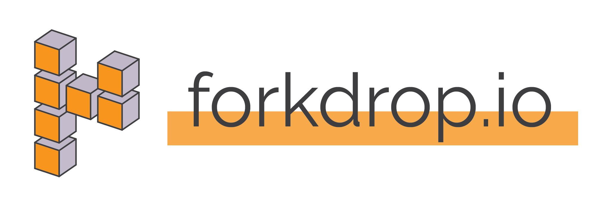

An experienced software developer and architect in distributed systems, protocols and inter-component APIs. He has written and delivered a high quantity of complex software in many languages at a professional level. He is an active mind in the Bitcoin space who enjoys thinking in new paradigms.
PrimeVR was founded to build innovative applications of VR and cryptocurrency technologies for user-facing applications. We are most interested in ways of reducing the barriers to entry between compelling new technology and end users.
Sparkshot - June 2018 to Present 
An art platform driven by Lightning Network. It allows visual artists to upload and debut artwork via micropayments provided by users.
Built backend systems in Python with Twisted, Flask and other frameworks to serve browser clients over WebSockets.
Built interfaces with C-Lightning and tracks micropayment.
Architected application stack for low-latency and horizontal scaling to match customer demand.
Forkdrop Suite - May 2018 to Present
Forkdrop Suite is an open source set of tools and process to assist in claiming Bitcoin fork and airdrop tokens while retaining privacy and anonymity. It is designed to run on TAILS and exclusively behind Tor to serve key security and user privacy.
Wrote engine in Python for pulling and processing transaction records over Tor from either a block explorer or Electrum node.
Wrote Bitcoin transaction parser using python-bitcoinlib to infer fork coin holdings on forked chains.
Delivered extensive, friendly, user guide documentation to assist users.
Forkdrop - December 2017 to Present

A detailed directory of Bitcoin fork projects and cryptocurrency exchanges which allow deposit and trade. It serves Bitcoin holders by helping them determine there fork and airdrop coin holdings and provides directions on the complex tasks of safely claiming and selling these tokens.
Build backend for generating and cross-linking dataset from structured inputs
Ongoing monitoring and research of updates to the dataset.
Delivered extensive, friendly, user guide documentation to assist a variety of skillsets and existing knowledge.
(Canceled WebVR Art Project) - August 2017 to December 2017
A web-delivered and web-based VR experience for the visualization and enjoyment of tokenized memes and collectables. It was an attempt to find avenues monetization without an app store and access end-users without an installed binary. While canceled, this project was a conceptual predecessor to sparkshot.io
Built Python-based engine for generation of 3D WebVR spaces based on combination of structural markup, blockchain state, out-of-band tokenized art metadata.
Interfaced with bitcoind and counterparty-lib to receive on-chain payments and new state.
Dash Dash Run! - February 2017 to August 2017
A virtual reality arcade running game for HTC Vive and Oculus Rift. Succeeded with a novel mechanic of headset and controller data tracking as a gameplay mechanic to simulate multiplayer races against recordings that move like real players without the need for real-time matchmaking.
Built web backend in Python to collect data out of the engine and validate player movement data and publish for other instances of the game to access.
Built movement engine for Unity/C# to collect and play back spacial data.
Dell EMC - October 2016 to January 2017
EMC - September 2008 to October 2016
YottaYotta - January 2008 to September 2008
- EMC VPLEX is a virtual computer data storage product introduced by EMC Corporation in May 2010. VPLEX implements a distributed "virtualization" layer within and across geographically disparate Fibre Channel storage area networks and data centers.
Worked on the core development team that built and launched the core node technology for the product.
Wrote multi-node distributed system code in a non-preemptive thread model.
Maintained, re-vamped, and extended a SCSI initiator stack for interfacing with high-availability block storage across a distributed cluster.
Wrote and maintained test automation frameworks to allow delivery of robust test coverage along with product code.
Master of Science in Electrical and Computer Engineering, 2008
Thesis work in Machine Learning / AI involving Neuro-fuzzy networks applied to self-classification of server workloads. [full thesis]
Bachelor of Science in Computer Engineering, 2005
Computer Engineering: Software Option specialization.
Capstone project work: PalmOS mobile development and applied cryptography.
Edmonton Bitcoin Meetup Presentation (2020-02-19): The Onion Router and TAILS
BTC Sessions Demo: Building on Bitcoin's Lightning Network with JD
Edmonton Bitcoin Meetup Presentation (2019-10-16): A Tour of bitcoind
Edmonton Bitcoin Meetup Presentation (2019-08-21): Do Block Explorers Suck? How You Can Improve Your Privacy and Do Better
Edmonton Bitcoin Meetup Presentation (2019-05-22): The Gumball Machines are in Charge: Blockchains and Decentralization
BTC Sessions Demo: Lightning Network Jukebox at the Bitcoin Rodeo
Edmonton Bitcoin Meetup Presentation (co-presenter) (2019-01-16): The Wild West of Money
YEGSEC Presentation (2018-08-21) Slides: Straight Talk on Bitcoin and Blockchain: Cutting through the BS to get to the tech and stuff you need to know.
Bitcoin Uncensored interview: What is a Blockchain fork, and why the hell is it so contentious!
Edmonton Bitcoin Meetup - Co-Organizer
Edmonton Bitcoin Association - Co-Founder, Director
APEGA - Formerly a P.Eng; currently inactive; in good standing
Onion Studio - (homepage w/running frontend)
BannerPunk! - (homepage w/running frontend) - (introductory video)
WIP: Lightning Network Soda Vending Machine (RaspberryPi-Based)
Lightning Network Jukebox Node
Waveshare E-Ink Display Software Driver for Raspberry Pi GPIO
mock-c-lightning
Kvlt - An XFCE Theme That Doesn't Bother Me
A DIY Power Supply For Hi-Fi USB Audio for a Raspberry Pi
Raspberry Pi Bitcoin Airgap Signer
Bitcoin contributions:
Increment MIT licence copyright header year on files modified in 2016
Tools for analyzing, updating and adding copyright headers in source files
Make copyright header lines uniform
Add MIT license headers to .sh scripts where missing
Add MIT License copyright header to remaining Python files
Add MIT License copyright header to zmq_sub.py
Clarify statement about parallel jobs in rpc-tests.py
Add missing copyright headers
doc: add example for building with constrained resources
libsecp256k1 (unmerged): Clear sensitive memory without getting optimized out
bitcoin-maintainer-tools (unmerged): Framework, scripts and tests.